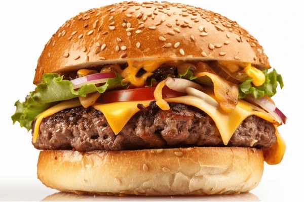

Burger recipe

Description
The best burger recipe for summertime grilling! This juicy burger is jam-packed
with all kinds of stuff and has no tasteless bread crumbs. Serve on buns with
your favorite condiments.
Ingredients
- Beef:These basic burgers start with 1 ½ pounds of lean ground beef.
- Onion:A finely chopped onion takes the flavor up a notch.
- Cheese:You'll need shredded Colby Jack or Cheddar cheese.
- Egg:An egg lends moisture and helps bind the patties together.
Steps
- Combine the ingredients in a bowl.
- Make four patties.
- Grill the patties until the juices run clear and the meat is no longer pink in the center.